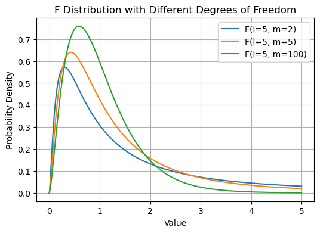
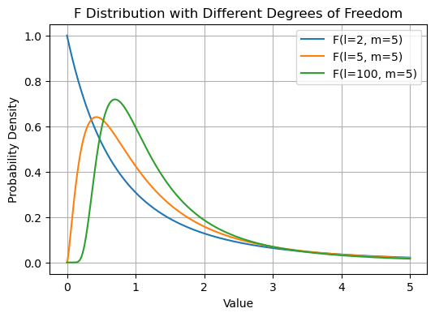
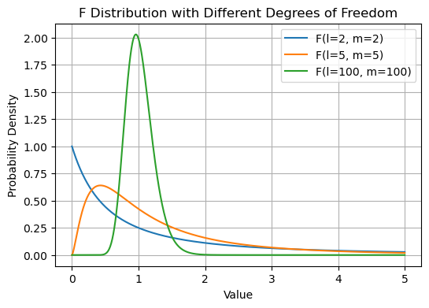

import numpy as np
import matplotlib.pyplot as plt
from scipy.stats import f
def plot_f_distribution(lms):
"""
自由度 (l, m) を変えた F分布の分布形状をプロットする関数。
Parameters:
- l_values: 分子の自由度のリスト
- m_values: 分母の自由度のリスト
"""
# xの範囲を定義
x = np.linspace(0, 5, 1000)
plt.figure(figsize=(6, 4))
for l, m in lms:
# F分布の確率密度関数 (PDF) を計算
pdf = f.pdf(x, l, m)
# F分布のグラフをプロット
plt.plot(x, pdf, label=f'F(l={l}, m={m})')
plt.title('F Distribution with Different Degrees of Freedom')
plt.xlabel('Value')
plt.ylabel('Probability Density')
plt.legend()
plt.grid()
plt.show()F分布について
F分布ってどんな分布?

博士、今度はF分布について聞きたいんだけど、これは何？
F分布は、統計学において非常に重要な役割を果たす分布だよ。これは、二つの異なるデータセットの分散がどの程度異なるかを比較するときに使用されるんだ。


分散って何だっけ？
分散とは、データがその平均値からどの程度散らばっているかを示す数値だよ。例えば、クラスでのテストの点数がみんな似たような点数なら分散は小さいけど、点数がピンキリだと分散は大きくなるんだ。


なるほどね。でも、どうしてF分布が必要なの？
例えば、ある部品を作る二つの機械AとBがあって、それぞれの機械で製造された部品の品質のばらつきの大きさを比較したりするよ。ばらつきが大きくなるとそれだけ不良品を作ってしまうってことだから、とても大事なんだ。
おお、それは面白いね！F分布はどんな形をしているの？
実際にプログラムを使って見てみよう。
F分布の分布形状
グラフを見る前に、以下のt分布の定義を確認しよう。
\[U_l \sim \chi^2(l),\] \[V_m \sim \chi^2(m), \] \(U_l \text{と} V_m \text{は独立とするとき、}\) \[F = \frac{U_l/l}{V_m/m}\] \(\text{は自由度$(l,m)$のF分布$F(l,m)$に従う.}\) \(\text{$l$を分子の自由度,$m$を分母の自由度と呼ぶ.}\)
F分布には自由度が2つもあるんだね。これもカイ二乗分布と同じものなの?
そうだよ。簡単に言うと、自由度とは分析に使われる独立した情報のピースの数のことだよ。
2つのデータセットの分散を比較するときは、それぞれのサンプルサイズから1を引いた値になるよ。

じゃあ今回は2つの自由度を変えたグラフが見れるわけだね!
そうだね。実際に見てみよう!
# 分子の自由度を固定して、分母の自由度を変えたのリストの例
lms = [(5, 2), (5, 5), (5, 100)] # (分子の自由度, 分母の自由度)
# 関数を呼び出してF分布をプロット
plot_f_distribution(lms)
F分布は、右に長く尾を引く形をしているんだ。これは、2つのデータセットの分散の比が、常に正の値を取るためで、0以下になることはないからだよ。形は、比較する二つのサンプルの自由度によって変わるんだ。
なるほど。分子の自由度\(l\)を固定して、分母の自由度\(m\)を大きくすれば、裾は小さくなるんだね!
# 分子の自由度を変えて、分母の自由度を固定したリストの例
lms = [(2, 5), (5,5), (100,5)] # (分子の自由度, 分母の自由度)
# 関数を呼び出してF分布をプロット
plot_f_distribution(lms)
今度は分母の自由度\(m\)を固定して、分子の自由度\(m\)を大きくしたんだね。裾の大きは同じくらいに見えるけど、分布のピークの位置が変わっているね!
# 分子の自由度を変えて、分母の自由度を固定したリストの例
lms = [(2, 2), (5,5), (100,100)] # (分子の自由度, 分母の自由度)
# 関数を呼び出してF分布をプロット
plot_f_distribution(lms)
今度は分母の自由度\(m\)と分子の自由度\(m\)を一緒に大きくしたんだね。自由度が大きくなるにつれ、裾は小さく、分布のピークは右に行くんだね!
F分布はいつ使う?
F分布を使うと、何が分かるの？
F分布を使うと、二つのグループ間での分散の違いが偶然によるものなのか、それとも実際に意味のある差があるのかを統計的に判断できるんだ。
これは、例えば機械の性能の比較や、新しい教育方法が効果があるかどうかを調べるときなどに非常に役立つよ。


なるほど、t分布は平均について知る時に使ったけど、F分布は分散について比較するときにとても大切なんだね！
まさにその通り。F分布は統計学における重要なツールの一つで、研究者がデータから意味のある結論を導き出すのを助けるんだ。

今日はF分布について教えてくれてありがとう！統計学がこんなにも魅力的だとは思わなかった。データを通じて様々な発見があるなんて、もっと深く掘り下げてみたいな。
その意欲、本当に素晴らしいね。統計学はね、科学研究だけでなく、工学や教育、さらには日々の生活の中でも広く応用されているよ。データを適切に読み解き、分析するスキルは、これからの社会でとっても重要になる。その探求心、ぜひ続けていってね。
もちろんだよ！